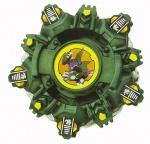

Draciel V
| Draciel Viper | |
|  | |
| Number: | A-67 |
|---|---|
| System: | 5-Layer/Magnecore |
| Type: | Defence |
Contents
Attack Ring (AR): Ten Spike
Ten Spike has a dark, metallic green color scheme. It has ten flat-shaped protrusions, five of which are smaller than the others, forming a star overall. In fact, each set of two small parts surrounding one longer and bigger protrusion is meant to resemble a turtle head and its paws. This means that the smaller pieces are mostly cut inwards to form the toes, whereas the bigger wings are rounded outwards. However, this odd combination of uneven, flat and still overall square-like protrusions, when hit, produces a lot of Recoil which knocks the Beyblade using it off balance. This Attack Ring would have at least benefited from having protrusions of even dimensions to form as much of a circle as possible. Ten Spike is the Draciel Attack Ring with the highest number of protrusions, and is therefore arguably the worst of them, suffering even more from the same flaws due to that. As such, following the trend of other Draciel Attack Rings, it has no use in any competitive combo.
WD: 10 Balance
Spin Gear (SG): Neo Right SG (North Core Version)
See Neo Right SG
Blade Base (BB): Viper Metal Ball Base
Unlike the previous Draciel Beyblades, Draciel V?s metal balls cannot be removed or inserted. This is a valuable attribute in Draciel S which would have provided it with more weight and therefore increased defensive ability. Another difference from the previous Draciel?s is that the metal balls in the base are located in the shaft. There are two metal balls in the shaft opposite each other, and the tip is similar to Draciel F?s in that it consists of a metal ball by itself. However, the tip of Draciel V isn?t fully free spinning. The base also has a magnetic rod, barring anything except the Spin Gears from the V and V2 series from being used with the this Blade Base. When a Magnacore (North or South) is attached, the Metal Pole converts to that polarity. This makes the metal balls stick to the magnetized shaft. Two main factors combine to make this Blade Base a bad choice for Defense, unlike its predecessors. Firstly the shaft containing the tip and metal balls is too long which means the base is high up, making it easy to knock off balance. The Beyblade also has bad LAD due to the notches on the base. The other factor is that the weight distribution of the Beyblade is faulty, the metal balls at the bottom bringing the center of gravity too close to the floor.
Other Versions
- Draciel V ? Ito Yokado ver (White)
- Draciel V ? Light Blue (Random Booster 12 Version)
- Draciel V - Gold Mekki (Gold Plated)
Gallery
-
Draciel V side view
Overall
Easily the most useless of the Draciel series as all of its signature parts have no uses, the only reason for buying this Beyblade would be for the 10 Balance Weight Disk and the Neo Right casings which can be obtained from other more useful Beyblades. This should only be purchased for collection purposes.